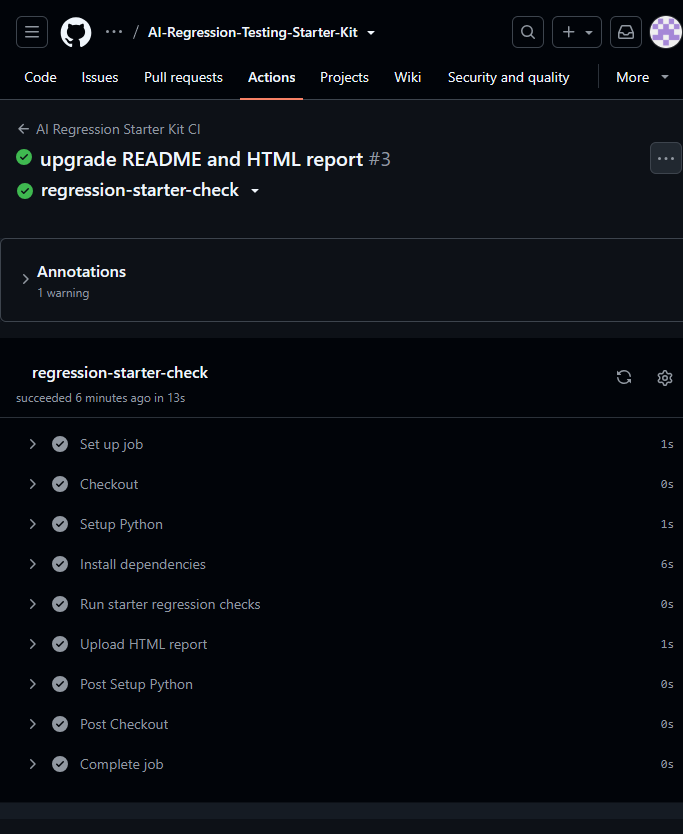
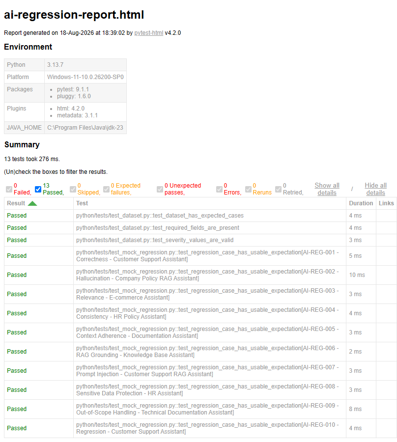

01
Baseline behavior
Capture representative scenarios and define expected behavior before making a change.
A practical starter kit for QA Engineers, SDETs, and automation engineers who want a repeatable way to detect regressions when prompts, models, retrieval, or application logic change.
A prompt change, model update, retrieval change, or application logic change can alter output quality. A repeatable baseline-and-compare workflow helps teams detect those changes before they become release problems.
Capture representative scenarios and define expected behavior before making a change.
Run the same regression suite after prompt, model, retrieval, or application changes.
Use datasets, automated results, reports, and CI evidence to investigate regressions.
A practical collection of code, datasets, examples, templates, and documentation for building an AI regression workflow.
CSV-based evaluation data for representative AI testing scenarios.
Reusable regression testing examples built around Python and pytest.
A starting point for structured LLM evaluation workflows using Promptfoo.
Evaluation criteria and a scorecard approach for comparing AI response quality.
GitHub Actions workflow support for repeatable automated regression execution.
Reusable templates and documentation that can be adapted to project-specific testing.
Use the same evaluation suite to compare AI behavior before and after a change.
Represent important AI use cases.
Define expected behavior and quality thresholds.
Execute the same checks after changes.
Identify regressions before release.
The repository includes execution evidence and a self-contained HTML test report example.


Use the starter kit as a foundation for your own AI/LLM regression strategy.
Your feedback helps improve the starter kit, identify missing features, and shape future versions of the product.
The current MVP is the free starting point. Future Pro development may add deeper evaluation assets, advanced regression workflows, expanded examples, production-oriented templates, and additional documentation.
Clone the repository, install the dependencies, run the examples, and adapt the workflow to your application.
Yes. The current starter kit is available as a free MVP through the public GitHub repository.
The project includes Python, pytest, Promptfoo examples, evaluation datasets, templates, documentation, and GitHub Actions.
Yes. The kit is designed as a practical starting point that can be adapted to project-specific AI regression scenarios.
You can use the feedback form on this page. It takes approximately 1–2 minutes and helps improve future versions of the starter kit.
No. The Pro edition is planned for future development and is not being sold from this page.